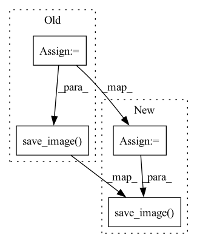

Pattern ID :17423
Before Change
def sample(self, batch, basename):
self.set_input(batch[0], batch[2], batch[1])
self.forward()
tensor_to_plot = torch.cat([self.fake_B, self.real_B], 3)
img = vutils.make_grid(tensor_to_plot)
vutils.save_image( tensor_to_plot, basename + "_construct.png")
self.set_input(torch.randn(1, self.embedding_dim).repeat(batch[0].shape[0], 1), batch[2], batch[1])
self.forward()
tensor_to_plot = torch.cat([self.fake_B, self.real_A], 3)
vutils.save_image(tensor_to_plot, basename + "_generate.png")After Change
with torch.no_grad():
self.set_input(batch[0], batch[2], batch[1])
self.forward()
tensor_to_plot = torch.cat([self.fake_B, self.real_B], 3)
img = vutils.make_grid(tensor_to_plot)
vutils.save_image( tensor_to_plot, basename + "_construct.png")
"""
maybe we don"t need generate_img...?
self.set_input(torch.randn(1, self.embedding_dim).repeat(batch[0].shape[0], 1), batch[2], batch[1])
self.forward()In pattern: SUPERPATTERN
Frequency: 5
Non-data size: 4
Instances Fragment ID: 57735088
Project Name: euphoriayan/zi2zi-pytorch
Commit Name: d18cdce2416d812c3944db8aef913e06879b022b
Time: 2020-06-29
Author: ysq58000@foxmail.com
File Name: model/model.py
M Class Name: Zi2ZiModel
N Class Name: Zi2ZiModel
M Method Name: sample(3)
N Method Name: sample(3)
M Parent Class:
N Parent Class:
M File Name: model/model.py
N File Name: model/model.py
M Start Line: 204
M End Line: 212
N Start Line: 215
N End Line: 227
Before Change
save_file_path_deblur_input = os.path.join(save_path_deblur, iformat, "input", "{:02d}.{}".format(j+1, iformat))
save_file_path_deblur_output = os.path.join(save_path_deblur, iformat, "output", "{:02d}.{}".format(j+1, iformat))
save_file_path_deblur_gt = os.path.join(save_path_deblur, iformat, "gt", "{:02d}.{}".format(j+1, iformat))
vutils.save_image(inp, "{}".format(save_file_path_deblur_input), nrow=1, padding = 0, normalize = False)
vutils.save_image(output, "{}".format(save_file_path_deblur_output), nrow=1, padding = 0, normalize = False)
vutils.save_image( gt, "{}".format(save_file_path_deblur_gt), nrow=1, padding = 0, normalize = False)
// video average
PSNR_mean_total += PSNR_mean
After Change
if gt_file_path_list is not None:
Path(os.path.join(save_path_deblur, iformat, "gt")).mkdir(parents=True, exist_ok=True)
save_file_path_deblur_gt = os.path.join(save_path_deblur, iformat, "gt", "{:02d}.{}".format(j+1, iformat))
vutils.save_image( gt, "{}".format(save_file_path_deblur_gt), nrow=1, padding = 0, normalize = False)
// video average
Fragment ID: 57735089
Project Name: codeslake/pvdnet
Commit Name: a731e53a93bdd93dfd5dadc78e456978ba14ccf0
Time: 2021-03-15
Author: codeslake@gmail.com
File Name: eval.py
M Class Name: AnonimousClass
N Class Name: AnonimousClass
M Method Name: eval_quan_qual(1)
N Method Name: eval_quan_qual(1)
M Parent Class:
N Parent Class:
M File Name: eval.py
N File Name: eval.py
M Start Line: 160
M End Line: 168
N Start Line: 160
N End Line: 174
Before Change
return {"val_loss": avg_loss, "log": tensorboard_logs}
def sample_images(self):
samples = self.model.sample(self.params["batch_size"], self.curr_device).cpu()
vutils.save_image( samples.data,
f"{self.logger.save_dir}{self.logger.name}/version_{self.logger.version}/"
f"{self.logger.name}_{self.current_epoch}.png",
normalize=True,
nrow=int(math.sqrt(self.params["batch_size"])))
// Get sample reconstruction image
test_input, _ = next(iter(self.sample_dataloader))
test_input = test_input.to(self.curr_device)After Change
normalize=True,
nrow=int(math.sqrt(self.params["batch_size"])))
samples = self.model.sample(self.params["batch_size"],
self.curr_device,
labels = test_label).cpu()
vutils.save_image( samples.data,
f"{self.logger.save_dir}{self.logger.name}/version_{self.logger.version}/"
f"{self.logger.name}_{self.current_epoch}.png",
normalize=True,
nrow=int(math.sqrt(self.params["batch_size"])))
del test_input, recons, samples
Fragment ID: 57735092
Project Name: antixk/pytorch-vae
Commit Name: 2946d7a0b9e31eb023ca60f8793656fe97cc198a
Time: 2020-01-23
Author: anandkrish894@gmail.com
File Name: experiment.py
M Class Name: VAEXperiment
N Class Name: VAEXperiment
M Method Name: sample_images(1)
N Method Name: sample_images(1)
M Parent Class: pl.LightningModule
N Parent Class: pl.LightningModule
M File Name: experiment.py
N File Name: experiment.py
M Start Line: 71
M End Line: 76
N Start Line: 74
N End Line: 89
Before Change
fake_images = fake_images.mul(0.5).add(0.5).squeeze().cpu()
image_grid = utils.make_grid(fake_images, nrow=self.save_row_number)
utils.save_image( image_grid, os.path.join(self.image_save_path, "{}.png".format(self.cfg.PROJECT_NAME)))
// save images one by one
// toPIL = transforms.ToPILImage()
// for i, image in enumerate(fake_images):
After Change
image = toPIL(image)
image.save(os.path.join(self.image_save_path, "{}.png".format(i)))
else:
image_grid = utils.make_grid(fake_images, nrow=self.save_row_number)
utils.save_image( image_grid, os.path.join(self.image_save_path, "{}.png".format(self.cfg.PROJECT_NAME)))
Fragment ID: 57735094
Project Name: luzhixing12345/anime-wgan
Commit Name: c3ccaea9514b0fc10c38fdd21ea94e07cc286a9f
Time: 2022-05-16
Author: luzhixing12345@163.com
File Name: model/BaseModule.py
M Class Name: BasicGAN
N Class Name: BasicGAN
M Method Name: generate_images(1)
N Method Name: generate_images(1)
M Parent Class: nn.Module
N Parent Class: nn.Module
M File Name: model/BaseModule.py
N File Name: model/BaseModule.py
M Start Line: 95
M End Line: 99
N Start Line: 96
N End Line: 110
Before Change
// normalize=True,
// nrow=int(math.sqrt(self.params["batch_size"])))
samples = self.model.sample(self.params["batch_size"],
self.curr_device,
labels = test_label).cpu()
vutils.save_image( samples.data,
f"{self.logger.save_dir}{self.logger.name}/version_{self.logger.version}/"
f"{self.logger.name}_{self.current_epoch}.png",
normalize=True,
nrow=int(math.sqrt(self.params["batch_size"])))
del test_input, recons, samples
After Change
// nrow=12)
try:
samples = self.model.sample(144,
self.curr_device,
labels = test_label).cpu()
vutils.save_image( samples.data,
f"{self.logger.save_dir}{self.logger.name}/version_{self.logger.version}/"
f"{self.logger.name}_{self.current_epoch}.png",
normalize=True,
nrow=12)
except:
raise RuntimeWarning("No sampler for the VAE model is proviced. Continuing...")
Fragment ID: 57735085
Project Name: antixk/pytorch-vae
Commit Name: 330681d5b01126be50ee4d64433252591e50452e
Time: 2020-02-14
Author: anandkrish894@gmail.com
File Name: experiment.py
M Class Name: VAEXperiment
N Class Name: VAEXperiment
M Method Name: sample_images(1)
N Method Name: sample_images(1)
M Parent Class: pl.LightningModule
N Parent Class: pl.LightningModule
M File Name: experiment.py
N File Name: experiment.py
M Start Line: 68
M End Line: 93
N Start Line: 68
N End Line: 96